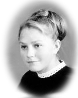
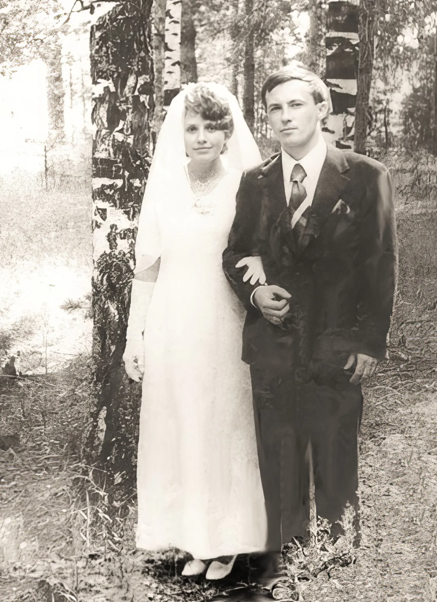
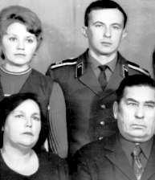
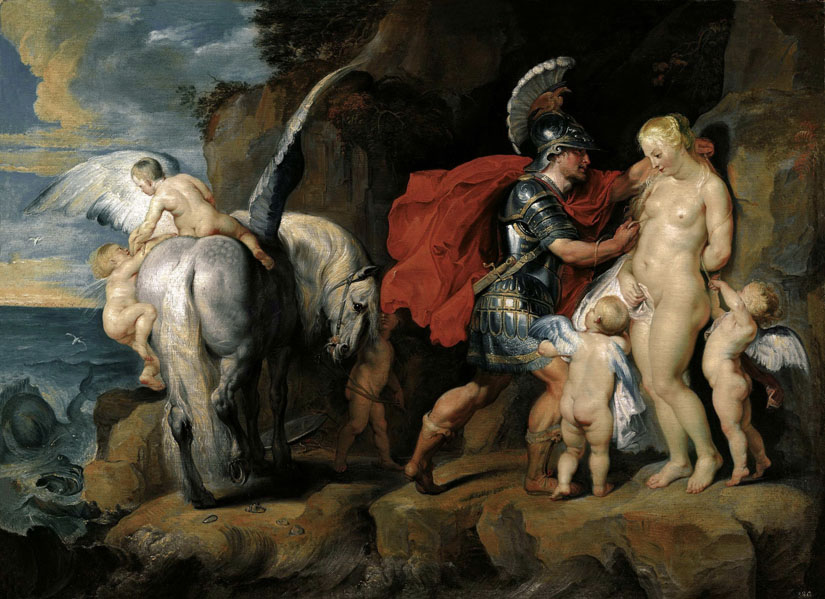
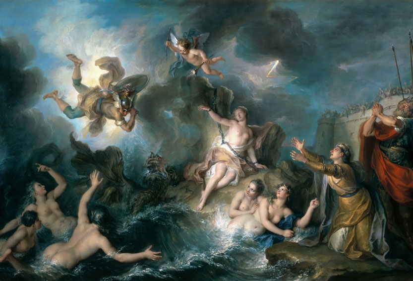
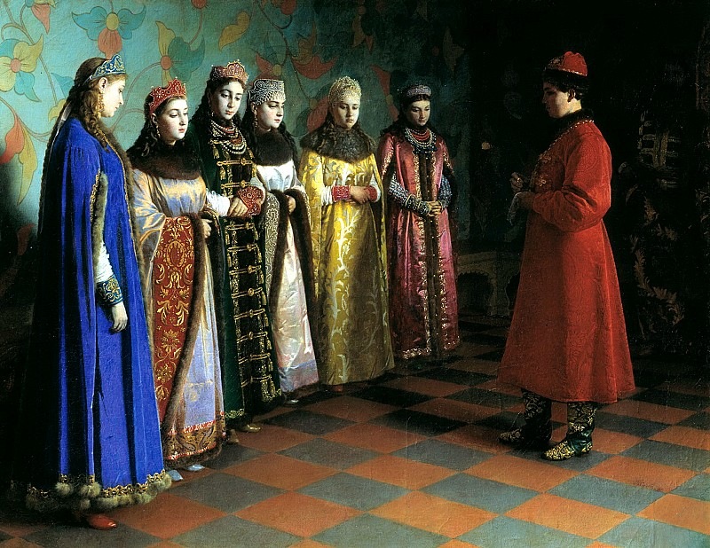

 Во время дипломной практики 1969-1970 на Гусевском Хрустальном заводе, построенного купцом Мальцовым, мне понравился бантик от фартучка у вчерашней школьницы, сортировавшей посуду на конвейере. Несколько лет спустя, приехав в краткосрочный отпуск в Гусь по случаю ноябрьского праздника, я увидел знакомое лицо в колонне демонстрации трудящихся Хрустального завода с плакатом "Слава КПСС". Сознание моё возмутилось, чувства взбунтовались. Словно Персей освобождающий Андромеду, я вырвал свою Галину из лап КПСС и предложил ей всё, что мог иметь в будущем и она согласилась. Любовь и другие ценности мной вкратце рассматривались. Однако я не видел перспектив учиться на отлично, выбрать не обожаемую жену после окончания службы и строить карьеру в государстве неразвитого социализма. Решил жить в тех обстоятельствах и ценностях, которые мне предлагал каждый день, не откладывая на потом то, что можно было реализовать здесь и сейчас. |
 |
Мои родители:
 С родителями и женой Галей |
|
Андромеда на полотне Рубенса соответствует моей избраннице; немного похож на Персея и я. Мы - не царские дети, однако суть нашей истории похожа на сюжет этой картины.
 Питер Пауль Рубенс, Персей и Андромеда, 1621 год
 Шарль Куапель, Персей спасает Андромеду, 1727 год Вступление в брак в жизни каждого человека это событие важное и радостное, сравнимое с удачным подвигом. Оно означает начало существования семьи - основного, первичного звена любого общества. Это также основание маленького личного хозяйства - тоже первичного звена всей экономики. Это и основа для физического, психического и социального благополучия. Недаром церковное венчание включает возложение на головы новобрачных венцов, подобий царских корон. Оно символизирует то, что семья - это маленькое царство в земном смысле и маленькая церковь в смысле духовном. Брак есть союз мужчины и женщины, соглашение на всю жизнь, общение в Божеском и человеческом праве на основе
достоинства.
Всеблагой Бог создал из праха земного человека и, одарив его вечным дыханием жизни, поставил владыкою над всем земным. Господь создал из ребра Адама жену его - Еву, сопроводив это тайнодейственными словами: "Не хорошо быть человеку одному; сотворим ему помощника, соответственного ему" (Быт. 2, 18) (книги Священного писания - Библии). И они пребывали в Эдеме (Земной рай ) до грехопадения, когда, преступив запрет, соблазненные лукавым искусителем, были изгнаны из рая. По благому приговору Создателя Ева сделалась спутницей Адама на многотрудном земном пути и праматерью человеческого рода. Первая человеческая чета, получив от Бога обещание об Искупителе человечества и Попрателе сатаны (Быт. 3, 15), была и первой хранительницей спасительного предания, которое затем, в потомстве Сифа, переходило живительным таинственным потоком из рода в род, указуя на ожидающееся пришествие Спасителя. Оно было целью первого завета Бога людям и после многих событий и пророчеств осуществилось в Воплощении Иисуса Христа от Духа Святого и Преблагословенной Приснодевы Марии, Новой Евы. Брак - просвещение и одновременно тайна. В нем происходит преображение человека, расширение его личности.
Человек обретает новое зрение, новое ощущение жизни. В браке человек может видеть мир по-особому, через другую
личность. Это и дает то чувство завершенной полноты и удовлетворения, которое делает нас богаче и мудрее.
Эта полнота еще углубляется с возникновением из двоих, слитых вместе, третьего, их ребенка. Совершенная
супружеская пара породит и совершенного ребенка, она и дальше будет развиваться по законам совершенства; но
если между родителями существует, непобежденный разлад, противоречие, то и ребенок будет порождением этого
противоречия и продолжит его.
Через таинство Брака даруется благодать на воспитание детей, которой христианские супруги лишь содействуют,
как сказано у апостола Павла: "Не я, впрочем, а благодать Божия, которая со мною" (1 Кор. 15, 10).
Ангелы-хранители, приданные младенцам от святого Крещения, тайно, но ощутимо содействуют родителям в
воспитании детей, отвращая от них различные опасности.
Если в браке совершилось только внешнее соединение, а не победа каждого из двоих над своим эгоизмом и
гордыней, то это отразится и на ребенке, повлечет неминуемое отчуждение его от родителей - раскол домашней
церкви.
Но ребенка нельзя насильно заставить быть таким, каким хотят его сделать отец и мать. Ведь он, получив от них
тело, воспринял от Бога главное - единственную и неповторимую личность со своим собственным путем в жизни.
Поэтому в воспитании детей самое важное, чтобы они видели своих родителей живущими истинной духовной жизнью и
светящимися любовью.
Человеческий индивидуализм, себялюбие создают в браке особые трудности. Преодолеть их можно только усилиями
обоих супругов. Оба должны ежедневно созидать Брак, борясь с суетными ежедневными страстями, подтачивающими
его духовное основание - любовь. Праздничная радость первого дня должна продлиться на всю жизнь; каждый день
должен быть праздником, каждый день муж и жена должны быть новы друг для друга. Единственный путь к этому -
углубление духовной жизни каждого, работа над собой Самое страшное в браке - потеря любви, а исчезает она
порою из-за пустяков, поэтому все мысли и усилия надо направить на сохранение любви и духовности в семье, все
остальное придет само. Начинать эту работу надо с первых же дней совместной жизни. Казалось бы, самое простое,
но и самое трудное - решимость занять в браке каждому свое место: жене смиренно стать на второе место, мужу -
взять на себя тяжесть и ответственность быть главой. Если есть эта решимость и желание, Бог всегда поможет на
этом трудном, порой мученическом, но и блаженном пути. Недаром во время хождения вокруг аналоя поют
"Святии мученицы..."
О женщине сказано - "немощный сосуд". Эта "немощь" состоит главным образом в
подвластности женщины собственным неуправляемым эмоциям.
Только во Христе женщина становится равной мужчине, подчиняет высшим началам свой темперамент, приобретает
терпение, мудрость. Только тогда возможна ее дружба с мужем.
Однако ни мужчина, ни тем более женщина не должны иметь в браке друг над другом абсолютной власти. Насилие
над волей другого, хотя бы во имя любви, убивает саму любовь, отсюда следует, что не всегда надо смиренно
подчиняться такому насилию, раз в нем кроется опасность для самого дорогого. Большинство несчастных браков
становятся такими именно от того, что муж или жена считает себя собственником того, кого любит. Почти все
семейные трудности и разлады - отсюда. Величайшая мудрость христианского брака - дать полную свободу тому,
кого любишь, ибо земной наш брак - подобие Брака небесного - Христа и Церкви, в основе своей имеющего полную
свободу. Тайна счастья христианских супругов заключается в совместном исполнении воли Божией, соединяющей их
души между собой и со Христом. В основе этого счастья - стремление к высшему, общему для них предмету любви,
все к себе влекущему (Ин. 12, 32). Тогда и вся семейная жизнь будет направлена к Нему, и упрочится соединение
мужа и жены. А без любви к Спасителю никакое соединение непрочно, ибо ни во взаимном влечении, ни в общих
вкусах, ни в общих земных интересах не только не заключается истинная и прочная связь, но, напротив, нередко
все эти ценности вдруг начинают служить разъединению. Христианский брачный союз имеет глубочайшее духовное
основание, которым не обладают ни телесная близость, ибо тело подвержено болезням и старению, ни жизнь чувств,
переменчивая по своей природе, ни общие мирские интересы и деятельность, "ибо проходит образ мира
сего" (1 Кор. 7, 31). Жизненный путь христианской супружеской четы можно уподобить вращению Земли с ее
постоянным спутником Луной вокруг Солнца. Христос - Солнце правды, греющее детей Своих и светящее им во тьме.
Брачный союз мужчины и женщины установлен Самим Творцом в раю после создания первых людей, которых Господь сотворил мужчиной и женщиной и благословил словами: "Плодитесь и размножайтесь, и наполняйте землю, и владейте ею..." (Быт. 1, 28). В Ветхом Завете многократно выражается воззрение на брак, как на дело, благословляемое Самим Богом. По пришествии Своем на землю Господь Иисус Христос не только подтвердил благословенность брака, отмеченную в Законе (Лев. 20, 10), но и возвел его в степень таинства: "И приступили к Нему фарисеи, и, искушая Его, говорили Ему: по всякой ли причине позволительно человеку разводиться с женою своею? Он сказал им в ответ: не читали ли вы, что Сотворивший вначале мужчину и женщину сотворил их? И сказал: посему оставит человек отца и мать и прилепится к жене своей, и будут два одною плотью, так они уже не двое, но одна плоть. Итак, что Бог сочетал, человек да не разлучает" (Мф.19,3-6). Человек развивается и сегодня он пошёл дальше образа Божия и пытается строить свою жизнь и жизнь близких на основе нового понятия ДОСТОИНСТВО ЧЕЛОВЕКА по общечеловеческим ценностям, которые в 21 веке станут основой интеллектуальных информационных технологий. Варианты будущей жены будут предлагаться как музыка, клипы или реклама в современных компьютерных технологиях. На личном смартфоне или в компьютеризованном ЗАГСе совместно с консультантом по браку невесты будут предлагаться из ближайшего многоквартирного дома и до заморских стран. Человечество приобретёт качество устойчивого развития.  Григорий Седов, Выбор невесты царём Алексеем Михайловичем, 1882 год |
||